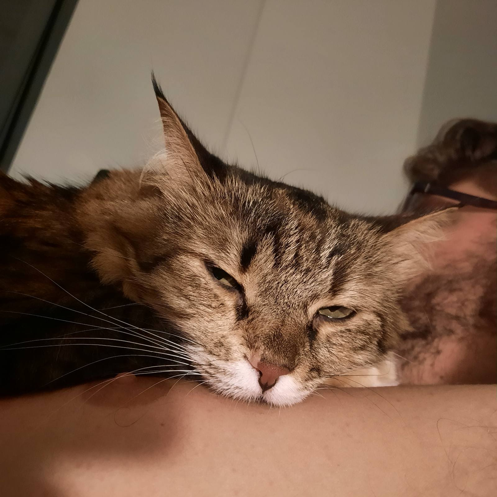

Milva the Cat

Λίγα λόγια
Είμαι πολύ βασανισμένη από τη ζωή. Όλη την ώρα με φιλάνε και με αγκαλιάζουν.
Εκπαίδευση
- Γεννήθηκα στην Αθήνα και μεγάλωσα στο Βόλο.
Εργασιακή Εμπειρία
- κορίτσι του μπαμπά
Σεπτέμβριος 2017 - Σήμερα
-
Φύλακας σπιτιού, δούλα και νοικοκυρά
Οκτώβριος 2018-Σήμερα
- Συμμάζεμα
- Σκούπισμα
- κυνήγι ζωυφίων
Δεξιότητες
- Ύπνος ⭐️⭐️⭐️⭐️⭐️
- Φύλαξη ⭐️⭐️
- Προστασία Παναγιώτας ⭐️⭐️⭐️⭐️⭐️
Βραβεία
- Γάτα της Χρονιάς 2018-2023
Λοιπά